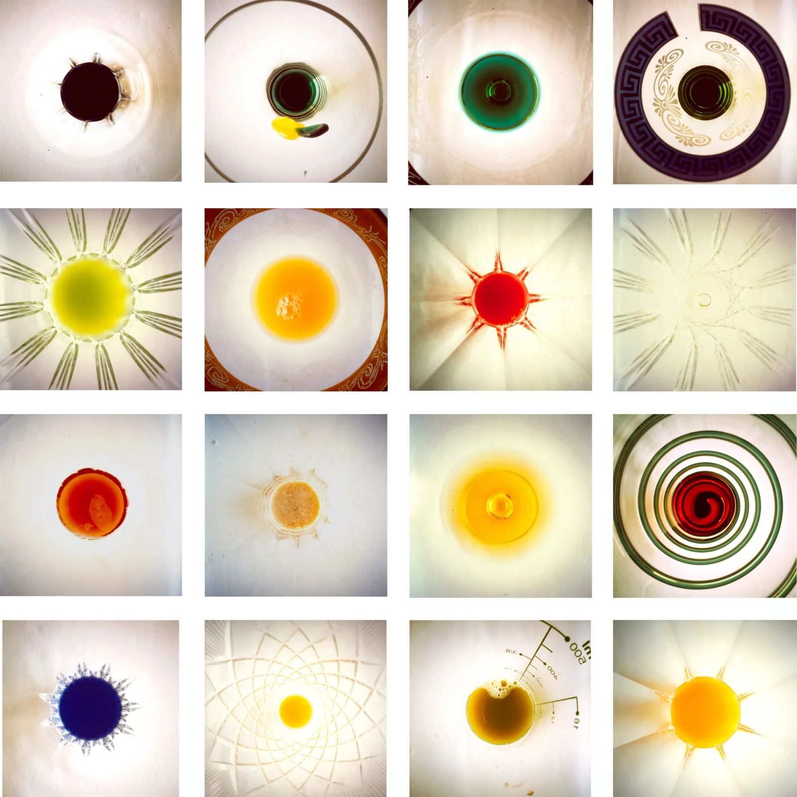
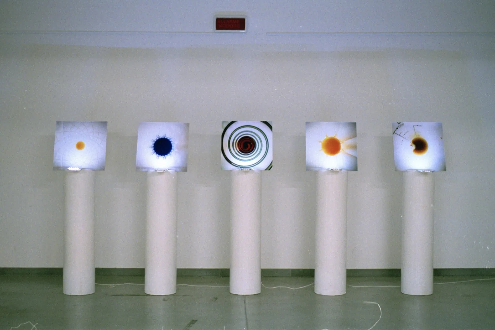

Aperitivo Stenopeico 2004
21 stampe fine art in plexiglass, 50×50 cm ciascuna
21 stampe fine art in plexiglass, 50×50 cm ciascuna
Offro un «aperitivo stenopeico» (dal greco stenos opaios, dotato di un foro) che stimola la vista, attirata da una percezione ogni volta nuova. Tra l'opera e chi guarda si instaura una vera complicità sensoriale che induce a sperimentare le infinite illusioni ottiche offerte dal punto di vista mutevole. La luce si colora attraverso quello che appare come un corpo celeste in uno spazio indefinito; crea movimento e definisce un tempo che non scorre, ma passa con un ritmo irregolare, stabilito dall'osservatore.
I offer an "aperitivo stenopeico" (from the Greek stenos opaios, provided with a hole) that stimulates sight, drawn by an ever-new perception. A genuine sensory complicity is established between the work and the observer, inviting them to experiment with the infinite optical illusions offered by the shifting point of view. Light takes colour through what appears as a celestial body in an indefinite space; it creates movement and defines a time that does not flow, but passes at an irregular pace set by the observer.

